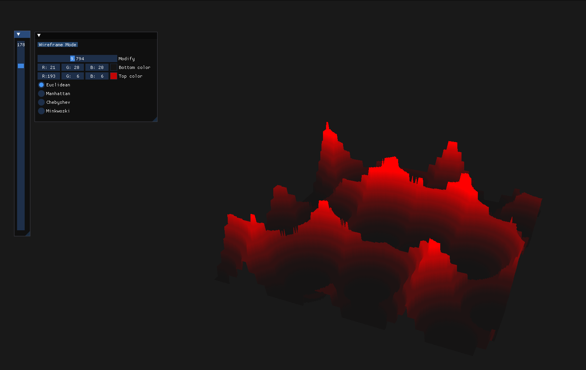
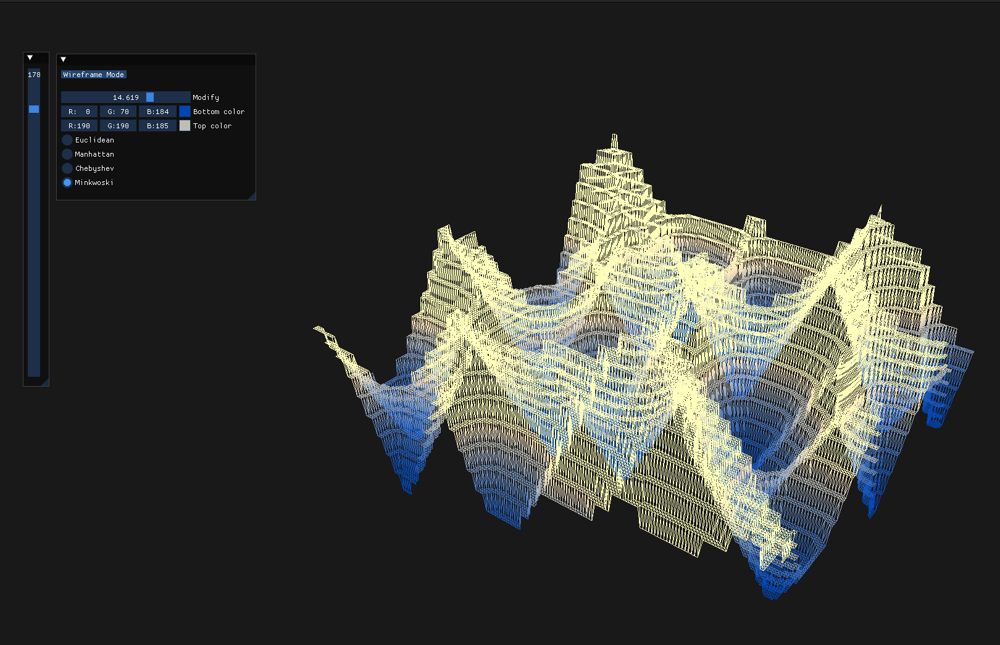
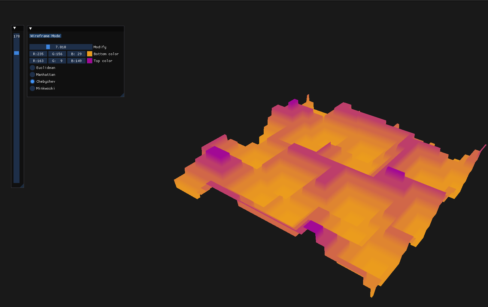

Procedural Terrain Tesselation

An interactive application that showcases procedurally generated terrains using Worley noise, allowing exploration of how different tessellation levels, distance functions and parameters affect the terrain’s detail and structure.
Tech Stack
OpenGL
C++
GLM
Dear ImGui
GLFW
Screenshots



Key Code Snippet
// Worley noise function used to generate
the terrain
float worley_noise(float x, float y, int dist_function) { // dist_function [1,4]
int cellX = static_cast(std::floor(x));
int cellY = static_cast(std::floor(y));
float minDistance = 100;
for (int offsetX = -1; offsetX <= 1; ++offsetX) {
for (int offsetY = -1; offsetY <= 1; ++offsetY) {
int neighborX = cellX + offsetX;
int neighborY = cellY + offsetY;
auto [featureX, featureY] = getFeaturePoint(neighborX, neighborY);
float distance;
switch(dist_function){
case 1:
distance = euclideanDistance(x, y, featureX, featureY);
break;
case 2:
distance = manhattanDistance(x, y, featureX, featureY);
break;
case 3:
distance = chebyshevDistance(x, y, featureX, featureY);
break;
case 4:
distance = minkowskiDistance(x, y, featureX, featureY);
break;
default:
distance = euclideanDistance(x, y, featureX, featureY);
};
minDistance = std::min(minDistance, distance);
}
}
return minDistance;
}
Project Comments
The main purpose of this project was to learn the principles behind procedurally generated terrains: what tools are used to create them and how different LODs affect their overall appearance. The goal was not to generate realistic terrains, although that could also have been achieved by combining a few additional techniques.
One of the first ideas for implementing terrain tessellation was to use tessellation shaders. However, this later proved to be a poor choice, since tessellation shaders do not provide additional geometry or detail along the Y axis — which is what you want when generating terrains with higher (vertical) detail. Instead, a more common method was used: generating an XZ grid of a specific resolution and offsetting the Y coordinates of the points using a noise function.
It is also worth pointing out how the effect of moving the terrain was created, as shown in the video above. Essentially, a copy of the XZ coordinates of the plane was kept and shifted in the desired direction, while the original XZ coordinates remained fixed. New Y offsets were then calculated based on the copied XZ coordinates. While this technique worked well enough for the scope of the project, I am not sure it would scale effectively to generate large, highly detailed terrains. That said, for larger terrains you probably wouldn’t need such a moving-terrain effect anyway.
The concept of procedural generation can be expanded far beyond terrains, and I believe there is tremendous potential here still waiting to be explored. Moreover, combining these techniques with more recent methods such as neural networks and GPT models could lead to fascinating results - something I hope to revisit in the future.